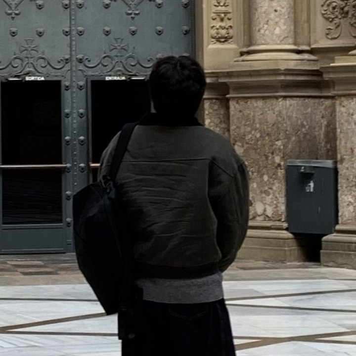

Focus

송용휘
B.S. Candidate, Chungbuk National University
School of Information and Communication Engineering · Cheongju, Korea
I am an undergraduate researcher at Chungbuk National University and a research intern at the Artificial Intelligence Laboratory. My work centers on world models and world-action models — how an agent can hold a compact internal model of its environment and read actions out of it cheaply — and on tool-using language models that stay reliable when real users speak indirectly. Previously I worked on multimodal reinforcement learning for autonomous driving at the MIP Lab.
Chungbuk National University, School of Information and Communication Engineering · Cheongju, Korea
GPA 3.83 / 4.5
Artificial Intelligence Laboratory (AI Lab), Chungbuk National University · Advisor: Prof. Keon Myung Lee
Conducting research on agentic AI, tool-using language models, and efficient world/world-action models.
Multimedia Information Processing (MIP) Laboratory, Chungbuk National University · Advisor: Prof. Hyun Soo Kang
Research on Autonomous Driving and Multimodal Reinforcement Learning.
Pseudo Lab (가짜연구소)
Reviewing World Models research papers, participating in technical discussions, and contributing structured review documents to the project website.
HyperCore AI & Data Analytics Club
Leading machine learning study sessions and supporting AI project development.
Under Review
Shapley-style Contribution-Guided Sensor Fusion for Robust Reinforcement Learning-Based Autonomous Driving
Submitted to KIISE Transactions on Computing Practices (KTCP), 2026.
A Decision Model as a World Model: Comparing JEV with Generative LLMs for LLM Agents
Submitted to the 2026 Fall Conference of the Korean Institute of Intelligent Systems (KIIS), 2026.
In Preparation
K-PragShift: Diagnosing Korean Pragmatic Revisions in Tool-Using Language Models
To be submitted to the EACL 2027 Student Research Workshop.
Lightweight Action Readout from Multi-Level World Representations for Efficient DriveWAM
Ongoing research toward a manuscript, 2026.
A Comparative Survey of Domestic and International Reinforcement Learning Research for Autonomous Driving
Manuscript in preparation, 2026.
Additional Publications
A Comparative Study on the Prevalence of Forensic Flies Using Chicken Corpse
Journal of Science Education for the Gifted, 2020.
* First author.
Team Project
Developed a local-first document agent for retrieving, connecting, and safely editing heterogeneous documents.
Upstage MixUp Agent Hackathon
Built AI-agent workflows and backend infrastructure for an educational AI platform.
Personal Project
Implemented trajectory prediction models using the Argoverse 2 Motion Forecasting dataset.
Research Project
Investigating efficient action prediction by extracting lightweight action representations from multi-level world representations.
Independent Research Project
Analyzing 93 RL-based autonomous driving studies and summarizing key research trends.
Faculty-Supervised Research Project
Implemented Shapley-guided multimodal fusion using RGB, LiDAR, route, and ego-state inputs.
Accepted as a participant in the Seoul Local Event with Team Moonkeeper.
Participating in the online R&D hackathon.
Advanced to Phase 2 Online AI Hackathon (Top 20%).
Worked on predicting pitch-control success probabilities from game context, player history, and tracking data.
Ranked 23rd in the preliminary competition and advanced to the 50-team final arena.
Developed an AI system for automated evaluation of Korean argumentative writing.
Finalist · Selected as one of approximately 20 finalist teams for the offline hackathon and demo day.
Participated in intensive development and validation of an AI-based startup MVP.
Finalist · Solar TutorBoard
Developed a Solar Pro3-based multi-agent platform for tutoring operations, including lesson reports, payment reminders, and schedule coordination.
Chungbuk National University
Chungbuk National University
Chungbuk National University
Chungbuk National University